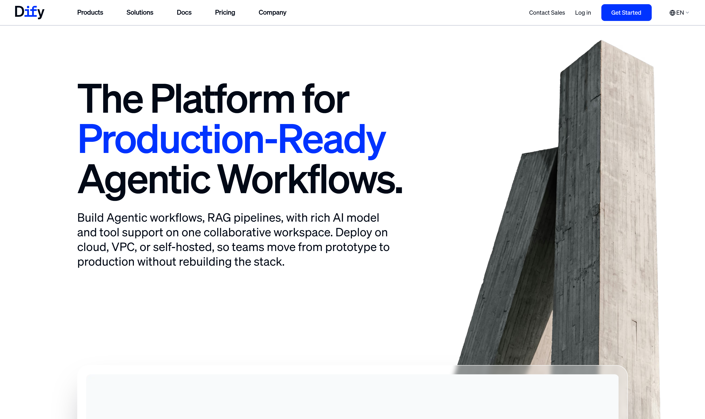
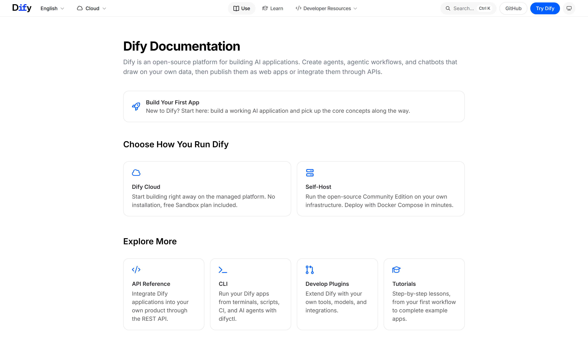
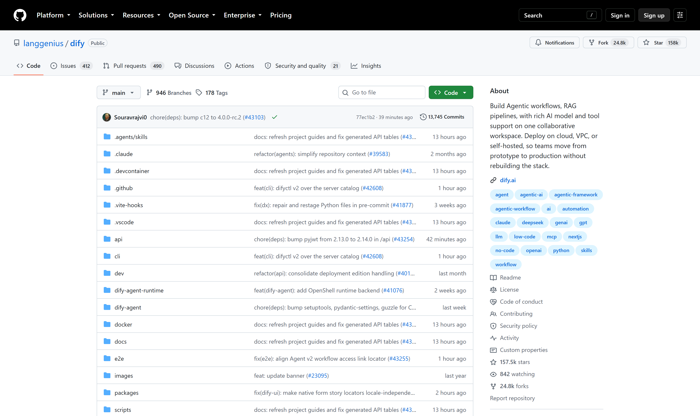

OSS PROJECT INTRO · DIFY 系列第 1 期：认识项目
今天开启新项目 Dify——官网自述 The Platform for Production-Ready Agentic Workflows，生产级智能体工作流平台；GitHub 自述更直白：开源 LLM 应用开发平台。大模型火了这几年，每个团队都在重复造同样的轮子：接模型、写提示词、拼 RAG 检索、挂工具调用、补日志观测——十个人做十个应用，九成工作是雷同的。Dify 的答案是把这九成收进一个平台：可视化编排画布、RAG 管线、Agent、模型管理、应用观测一站式交付，应用做完一键发布成 WebApp 和 REST API。一句话心智模型：Dify 是 LLM 应用的"开发到运营"一站式工作台——画布上拖出原型，API 里长出产品。本期结束，你能答上四个问题：它是什么、解决了谁的什么痛、云版与自托管怎么选、为什么 Java 架构师也值得认识它。
一个"拿大模型干活"的应用，无论表面多花哨，拆开都是同一副骨架：调模型（选型、密钥、限流重试、多供应商切换）、编排提示词（写、测、改版本、A/B 对比）、接知识（文档解析、分段、向量化、召回、重排）、挂工具（搜索、数据库、内部系统）、可观测（日志、追踪、成本统计）。用 Spring 生态打个比方：这就像每个项目都手写一遍连接池、对象映射和配置管理——不是做不出，是每家都在低水平重复。
更痛的是从原型到生产那一跳：团队用脚本demo验证了想法，接业务时要重写工程件——会话管理、流式输出、知识库增量更新、权限审计，一个都不能少。LLM 应用的门槛不在"能不能跑通"，而在"跑通之后那一长串工程化补课"。Dify 出场的理由，就是把这串补课变成平台自带的能力。
Dify 是 langgenius 团队 2023 年开源的 LLM 应用开发平台：后端 Python（Flask 加 Celery 的经典组合），前端 Next.js/TypeScript，Dify Open Source License（基于 Apache 2.0 附加条件，第 06 节细说）。官网对它的描述是："构建智能体工作流与 RAG 管线，配备丰富的 AI 模型与工具支持，一个协作工作台；部署上云、VPC 或自托管，团队从原型到生产不必重建技术栈。"仓库 README 则说它把 AI 工作流、RAG 管线、Agent 能力、模型管理、可观测性组合在一个界面里。

一句话心智模型：Dify 是 LLM 应用的"一站式工作台"——把调模型、编排、检索、发布这些横向能力做成公共设施，应用团队只补最后那一点点业务差异。原型阶段，产品经理在画布上拖节点；工程阶段，后端拿它发布的 REST API 当服务用。低代码与硬编码之间，它给了一条中间道路。
来源注记——dify.ai 官网首页与 GitHub langgenius/dify 仓库（2026-09-30 核对）：Star 约 157.5k · Fork 约 24.8k · 178 个版本标签 · 主语言 Python 与 TypeScript；仓库定位原文 Build Agentic workflows, RAG pipelines, with rich AI model and tool support on one collaborative workspace。
这张图的关键在"统一"二字：模型供应商被抽象成统一接入层，今天用云端闭源模型、明天换本地开源模型，应用侧一行不改——第 3 期会看到这套抽象如今落在插件体系上；能力侧的检索、工具、Agent 都是即插即用的公共件；对外则只有两张脸：给人用的 WebApp，给程序用的 REST API。平台把横向能力收走，团队把精力还给业务。
先看形状，第 2 期再亲手跑。对照官方部署文档（docs.dify.ai，2026-09-30 核对），自托管的全套环境一条命令拉起——官方前置要求仅两核 CPU、4 GiB 内存、Docker Compose 2.24 以上：
git clone https://github.com/langgenius/dify.git
cd dify/docker && cp .env.example .env
docker compose up -d # 一套栈：API/Worker/前端/向量库…起来之后有三个入口：浏览器开 http://localhost，第一次进 /install 页设置管理员账号；之后是工作台——建聊天助手、编排工作流、挂知识库都在这里；第三个入口是每应用一把钥匙的 Service API，官方口径"你发布的每个应用都是一个 REST API，知识库也是"，业务系统拿 Bearer 令牌就能调用。

来源注记——docs.dify.ai 《Deploy Dify with Docker Compose》与 API Reference Get Started（2026-09-30 核对）：前置 CPU ≥ 2 Core、RAM ≥ 4 GiB、Docker Compose 2.24.0+；默认经 nginx 暴露 80 端口；管理员初始化地址 http://localhost/install；Service API 鉴权原文 Every request carries the key as a Bearer token。
Dify 官方给三条路。Dify Cloud：开箱即用的托管平台，免费 Sandbox 计划自带常用模型额度，适合零成本试水；社区版自托管：Docker Compose 几分钟起一套，数据全在自己手里，本系列四期都走这条路；企业版：官方或合作伙伴提供，多工作区、SSO、高可用这些组织级能力。选型口径一句话：练手用云版，数据敏感或要深度定制选自托管，组织级管控找企业版。
| 维度 | Dify Cloud | 社区版自托管 |
|---|---|---|
| 上手成本 | 注册即用，零部署 | 一条 docker compose 命令（2 核 4 GiB 起） |
| 数据边界 | 在官方托管环境 | 全栈落在自己机房 / 内网 |
| 模型接入 | 自带额度 + 自接密钥 | 完全自配，本地开源模型也行 |
| 适合阶段 | 原型验证、轻量使用 | 生产接入、私有化交付 |
来源注记——docs.dify.ai 首页 Choose How You Run Dify 与 Cloud / Self-Host 两章节（2026-09-30 核对）：Cloud 口径原文 Start building right away on the managed platform. No installation, free Sandbox plan included；Self-Host 口径原文 Run the open-source Community Edition on your own infrastructure. Deploy with Docker Compose in minutes。
Dify 用的是Dify Open Source License——基于 Apache 2.0 附加了条件，不是严格 OSI 认证开源。附加条件主要指向一件事：不得绕过授权把 Dify 用作多租户 SaaS 对外转售；此外移除或修改Logo与版权信息需要遵守相应条款。换句话说：内部使用、自用服务、二次开发、教学研究统统自由，唯一要避开的是"拿它开一家多租户平台公司"这类商业模式。对架构师这是个必须提前看清的点——选型进方案前把许可条款过一遍，避免生产落地后才发现边界。

来源注记——github.com/langgenius/dify 仓库侧栏与 LICENSE 文件（2026-09-30 核对）：许可原文 the Dify Open Source License, based on Apache 2.0 with additional conditions；具体条款以仓库 LICENSE 文本为准。
一个常见误解：Dify 是"不写代码的人玩的玩具"。恰好相反，它同时伺候三类人，而架构师是收益最大的那类：
对照你熟悉的世界：Spring Boot 把 Servlet 与事务的样板代码收走，Dify 把 LLM 应用的样板工程收走——定位不同，"把重复劳动平台化"的思路一脉相承。本系列第 4 期实战就是把它接进业务系统的完整链路。
每题点击选项立即反馈 · 共 3 题
1. Dify 的官方定位是？
2. 社区版自托管的官方前置要求是？
3. Dify Open Source License 的边界是？
Dify 收走的是"横向通用件"的重复：其一，模型接入层——多供应商、密钥管理、限流重试、流式输出，一次抽象全部应用受益；其二，知识工程链——文档解析、分段、嵌入、索引、召回、重排，这条链自研没有三五个工程师月级投入做不稳；其三，编排与交互层——提示词版本管理、工作流执行、会话状态、WebApp 壳子；其四，运营件——日志追踪、标注回流、成本统计。这四类恰恰是每个应用都要、又都不构成业务差异的部分，平台化收益最大。它收不走的也有三层：业务逻辑本身——你的审批规则、领域话术、数据模型，平台无从代劳；深度性能定制——超大规模并发的推理优化、特殊硬件适配，那是 vLLM 这类推理栈的领地；强合规的私有协议对接——内部遗留系统的脏接口还得自己包。对选型的启示：评估 Dify 不是问"它能不能包办一切"，而是算两笔账——重复劳动占你项目工作量的比例，以及你的差异化恰好落在平台边界外的那部分有多少。重复占比高、差异化薄，平台收益大；反过来，差异化恰在检索与编排深水区的团队，自研或混合方案才有道理。
先摆成本结构。自研路线：首月成本在管线搭建——文档解析、分段、嵌入、召回全链自写或拼开源件，之后每一轮"换模型、调分段、改提示词"都是代码变更加回归测试；人力是持续的，而且能力沉淀在个别工程师脑子里。Dify 路线：首月成本在部署与学习——一套 docker compose 加两天熟悉；之后调优在界面上完成，产品经理能直接参与改提示词、看日志，工程团队只剩 API 集成与权限审计两件事。再算长期账：维护主体不同——自研是"你的团队"维护，Dify 是"开源社区"维护加你的团队升级跟进，后者把大版本质量风险换成了版本节奏的依赖。决策链四步：第一步，数据边界。制度文档出不了内网？自托管 Dify 满足，路线成立。第二步，需求形态。标准问答加强检索，平台甜点区，选 Dify；若核心是复杂多轮状态机或特殊推理链，先做一周画布验证再定。第三步，团队能力。有专职算法工程师且预期长年迭代检索管线，自研有沉淀价值；没有，Dify 几乎是默认解。第四步，退出成本。Dify 的编排配置与知识库数据可导出，应用侧只耦合 REST API——将来要迁走，重写的是编排层不是业务系统，试错成本可控。结论：这类"知识问答"需求，从 Dify 起步、把自研留给真正差异化的场景，是期望成本最低的路径。
带走这五句话：
下期预告：第 2 期《5 分钟跑起来》——docker compose 一条命令起全套栈，初始化管理员，建第一个聊天助手，挂一个知识库试出第一句带引用的回答。
Primary source：Dify 官方文档（docs.dify.ai）——本期定位、部署要求与许可口径均出自官网、官方文档与 GitHub 仓库（v1.17.1，2026-09-30 核对）；许可全文见 仓库 LICENSE 文件。